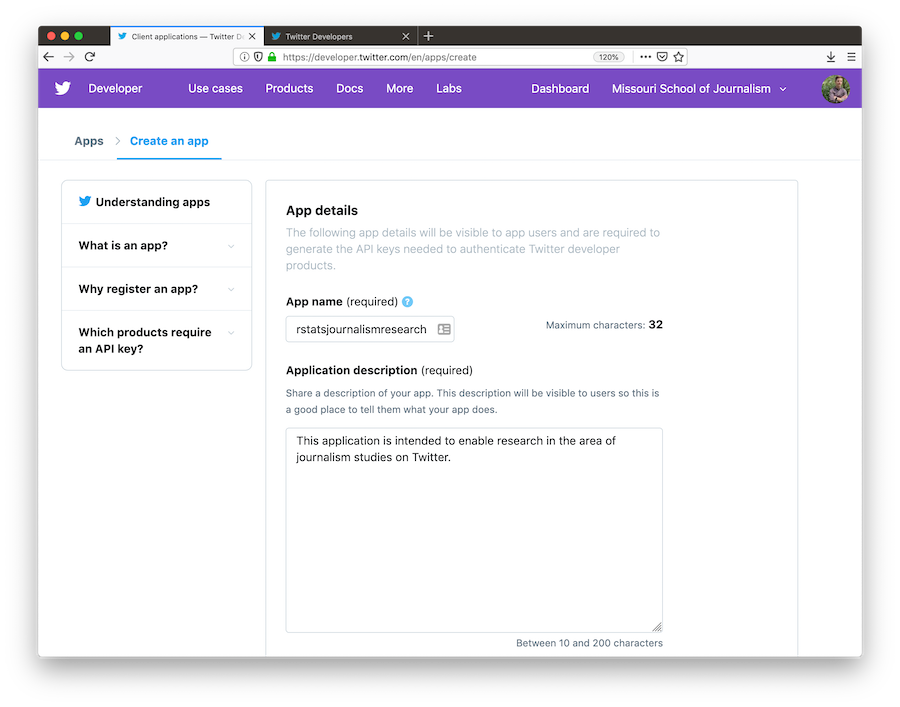
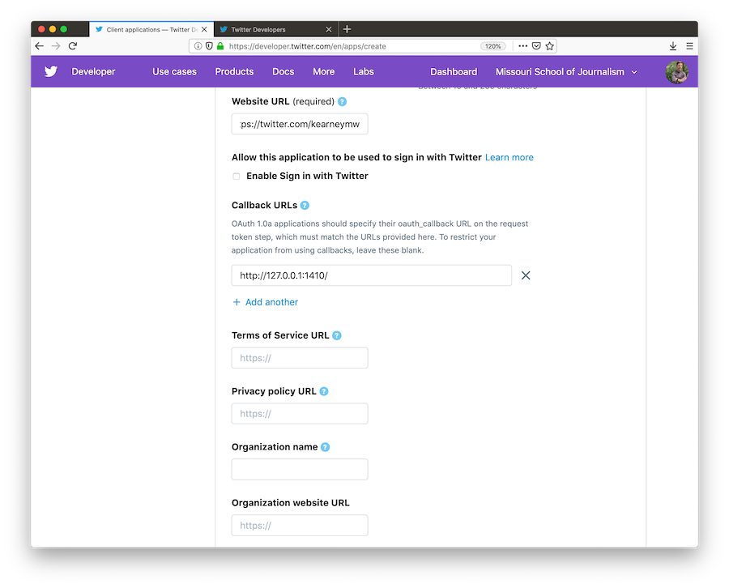
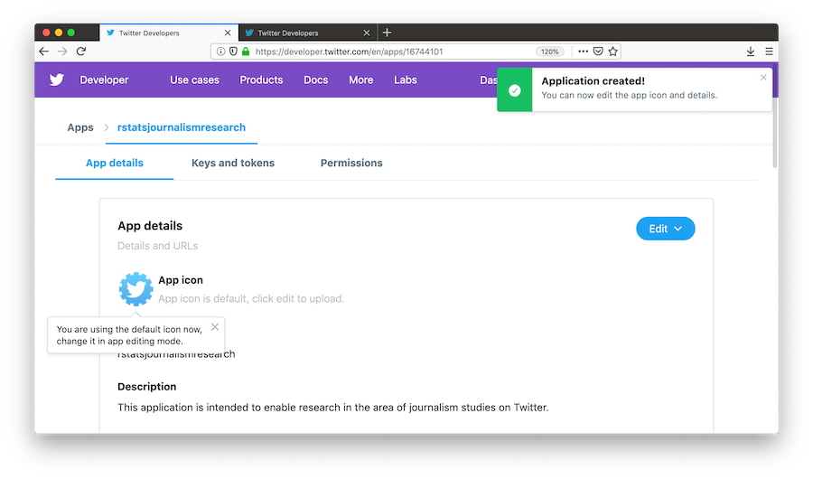
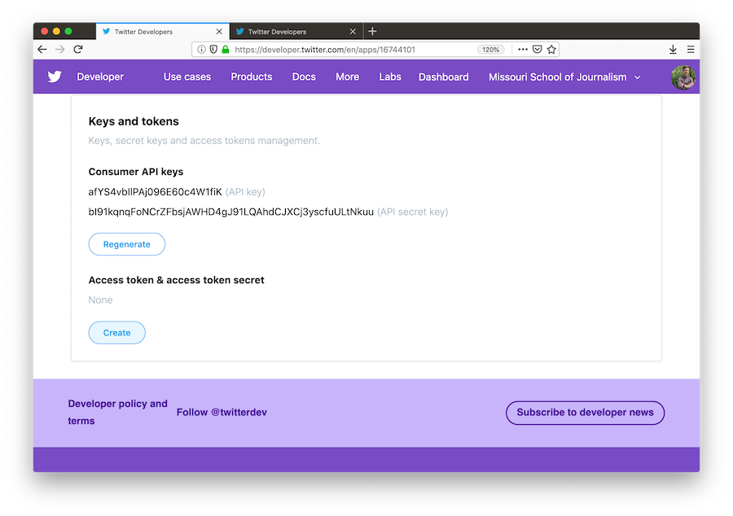

Obtaining and using access tokens
rtweet: Collecting Twitter Data
auth.Rmdrtweet
This vignette covers how to obtain and use Twitter API access tokens for use in the rtweet package.
Creating a Twitter App
To create a Twitter app, you will first need to apply for a developer account. This process along with a detailed explanation can be found at developer.twitter.com.
-
Once you have acquired a developer account, navigate to developer.twitter.com/en/apps, click the blue button that says,
Create a New App, and then complete the form with the following fields:-
App Name: What your app will be called -
Application Description: How your app will be described to its users
-
Website URLs: Website associated with app–I recommend using the URL to your Twitter profile -
Callback URLs: IMPORTANT enter exactly the following:http://127.0.0.1:1410
-
Tell us how this app will be used: Be clear and honest
-
When you’ve completed the required form fields, click the blue
Createbutton at the bottom-
Read through and indicate whether you accept the developer terms

-
And you’re done!

Authorization methods
Users can create their personal Twitter token in two different ways. Each method is outlined below.
1. Browser-based authentication
- Authentication via web browser requires the
httpuvpackage to be installed.
## install httpuv if not already
if (!requireNamespace("httpuv", quietly = TRUE)) {
install.packages("httpuv")
}- Navigate to developer.twitter.com/en/apps and select your Twitter app
- Click the tab labeled
Keys and tokensto retrieve your keys. - Locate the
Consumer API keys(aka “API Secret”).

- Copy and paste the two keys (along with the name of your app) into an R script file and pass them along to
create_token().
## load rtweet
library(rtweet)
## store api keys (these are fake example values; replace with your own keys)
api_key <- "afYS4vbIlPAj096E60c4W1fiK"
api_secret_key <- "bI91kqnqFoNCrZFbsjAWHD4gJ91LQAhdCJXCj3yscfuULtNkuu"
## authenticate via web browser
token <- create_token(
app = "rstatsjournalismresearch",
consumer_key = api_key,
consumer_secret = api_secret_key)- A browser pop-up window should appear. Click to approve (must be signed into twitter.com) and return to R.
- Your token has been created. Print your token to make sure the app name and
api_keymatch
2. Access token/secret method
- Navigate to developer.twitter.com/en/apps and select your Twitter app
- Click the tab labeled
Keys and tokensto retrieve your keys. - Locate the
Consumer API keys(aka “API Secret”).
- Scroll down to
Access token & access token secretand clickCreate

- Copy and paste the four keys (along with the name of your app) into an R script file and pass them along to
create_token().
## store api keys (these are fake example values; replace with your own keys)
api_key <- "afYS4vbIlPAj096E60c4W1fiK"
api_secret_key <- "bI91kqnqFoNCrZFbsjAWHD4gJ91LQAhdCJXCj3yscfuULtNkuu"
access_token <- "9551451262-wK2EmA942kxZYIwa5LMKZoQA4Xc2uyIiEwu2YXL"
access_token_secret <- "9vpiSGKg1fIPQtxc5d5ESiFlZQpfbknEN1f1m2xe5byw7"
## authenticate via web browser
token <- create_token(
app = "rstatsjournalismresearch",
consumer_key = api_key,
consumer_secret = api_secret_key,
access_token = access_token,
access_secret = access_token_secret)